2024-osFinancias5.1 - Build 5.1.0.127 Known issues
Base type 0 - Address1 / Postal code / Address 2 / Address 3
In this documentation, the Postal address and Delivery address will be displayed Address1 / Postal code / Address 2 / Address 3 in the following forms:
Debtors, Creditors, Documents, Calendar (also Reports → Calendar)
The Netherlands document layout files prints in this format.
In base type 1 probably osFinancials International (like TurboCASH5.2) the Postal address and Delivery address will be displayed Address1 / Address 2 / Address 3 / Postal code. The layout files , Debtor statements , Creditor remittance advises and Report headers is displayed in this sequence.
osFinancials5.1.0.127 Interface - Delphi 12
Setup groups - Colours - groups does not retain colours
If the Background colors is set, and no Font colors is set, the groups does not retain colours set in Setup → Groups in Account group 1 and Account group 2 as well as other groups.
Solution: To retain and save the selected colors, you also need to set both the Back color and the Font color.
Close active forms or reopen Set of Books or use Report button (Ledger analyser 1 / 2) Account group1 / Account group2 to see the changed colors.
In the case of Documents, Debtors, Creditors and Stock items, the changed colors on the grids will be available when you click on the Filter button.
|
osFinancials5 - Delphi12 / Delphi11 Setup Goups |
osFinancials5 - Reportman (Setup background colours) /- similar to osFinancials4 |
|
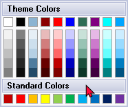 |
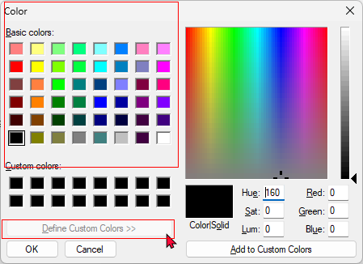 |
Radio buttons Selection not consistent
The radio buttons on some screens appears to be Delphi11 and on other screens Delphi12
Old look and New look radio buttons on 1 screen
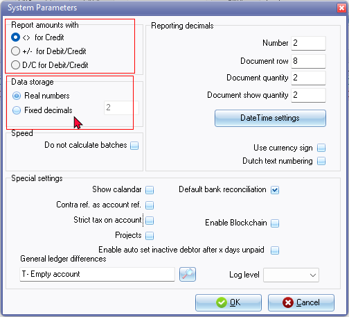
Examples
|
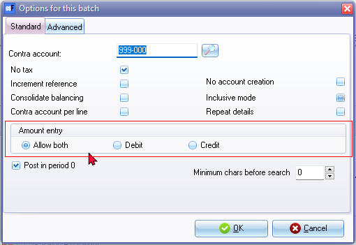 |
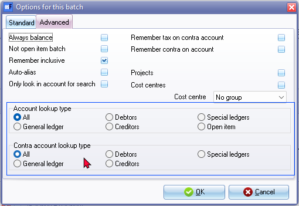 |
Old look Radio button
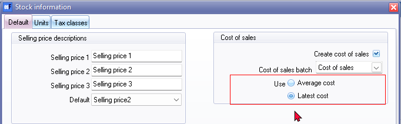
Old look Radio button
- Stock information
- Creation wizard
- Update ledger and many screens
New look Radio button
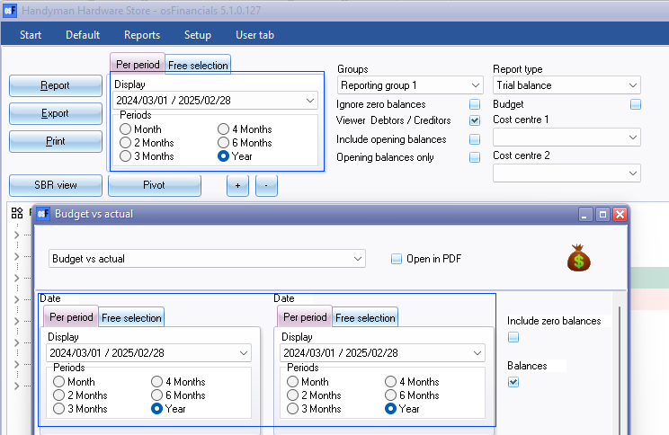
New look Radio button
- Customize languages
- Input-> Confirm
Expand / Collapse options not consistent
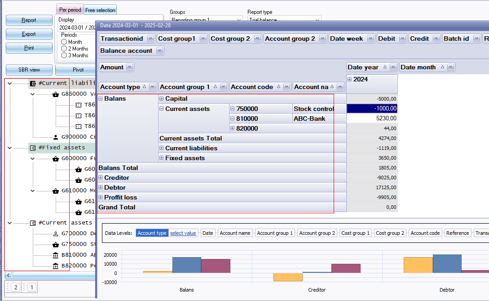
+ / - Expand / Collapse also on Groups and Document entry forms
Customize language
Customize language - Rest tab
Customize language - Rest tab Change descriptions
Description of Zero account and Group empty account 2 change buttons only saves 1 description.
Work around change both to Empty
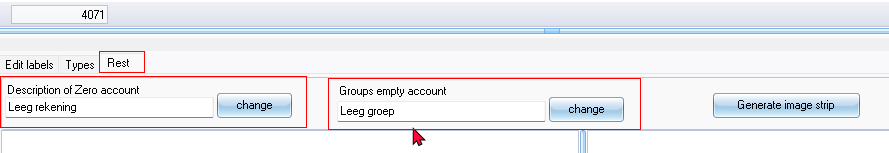
Customise Language - number of Characters
In Customise Languages - Can only enter 10 characters for new language (Some languages up to 15 characters in the " ...\bin\languages " folder). To use more than 10 characters, you may rename it manually in File Explorer to 15 characters.
Obsolete / out dated language files
Obsolete / out dated language files - May be deleted from languages folder (" ...\bin\languages ")
|
Language file |
Date of last changes |
Replaced and updated with |
Books download |
|
African.dfm |
2020/03/06 |
Afrikaans.dfm |
|
|
en-Trinandad.dfm |
2020/03/06 |
en-Trinidad.dfm |
EN-TRINIDADTOBAGO |
|
Nederlands.dfm.bak |
2020/05/08 |
|
|
|
testlang.dfm |
2020/03/06 |
|
|
|
Zeng.dfm |
2020/03/06 |
|
|
These language files is not linked to any Firebird Sets of Books and linked languages available as a free download. from the Download option on the "Creation wizard".
Bank accounts
Bank Accounts - Payment and Receipt batches F10:Setup
Default reconciliation method (Setup → System parameters) Deactivated Bank import plugin
Default = Allow both - Cannot change to Debit or Credit in the Advanced tab.
Bank Accounts - Select bank account changes label
Bank account name changes to Write102, etc. the record (accountid) number selecting a bank account.
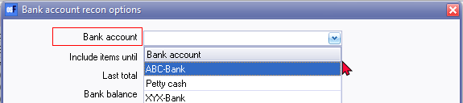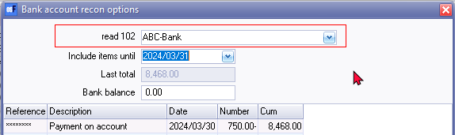
Calendar - Appointments
Creating Debtor Appointment 2 and selecting stock item produced the following error:
"QEvents: Cannot perform this operation on a closed dataset"
Exit osFinancials and Reopen the Set of Books, could recreate the appointment.
Think it may be the Stock item. If a stock item is selected, the last Empty space in the Event screen, if typed over, it will revert back to Empty.
Budgets (Reports ribbon) - MSSQL Errors
FIXED Budgets on Reports ribbon in Firebird Database types - osFinancials5.1.0.127 update
ERROR MSSQL Databases - Budgets on Reports ribbon in MSSQL Database types - osFinancials5.1.0.127 update still produces error:
Incorrect syntax near 'a'.
In MSSQL databases cannot enter and save budgets (Apply to selection button) in Budgets (Reports ribbon).
But can enter budget figures in Setup → Accounts (Setup ribbon).
Licence Typo - Not In Language File
osFinancials 5.1.0.102
{99XXX-PX99-9999-X9X9-99999999 X99}Multi-user max 7 to retieve Time license 2023/12/29 :Time license expires in 21 days! Please visit https://www.osfinancials.org/en/webshop
Message license typo retieve in stead of retrieve - Typo not in language files
Themes - Updated Creditors control icon - imagestrips
Fixes and Supported themes:
- Theme screenshots - Screenshots of the installed themes and new themes (about 34 themes). A sideshow of the themes rotating is available in osfinancials-themes-slides.zip file
- Known issues - Themes - Imagestrips excludes reports path. If images is removed from the theme folder, the imagestrip defaults to the classic theme, or other theme.
- Creditor control icon not loading correctly - Classic icon in some themes - Fixed - replaced the Acccreditors.svg icons (icon properties did not load the Acccreditors.ico) and re-created imagestrips in osFinancials5.1.0.109 - but with the osFinancials5.1.0.127 update does not include these fixes. The updated Creditors control icon - imagestrips is not included in the osFinancials5.1.0.127 update.
Screens - Display issues
osFinancials5.1.0.127 update issues with the following screens:
POS - Input → POS Invoice
Screen flickers in the New Invoice / Total/Subtotal area of the screen. 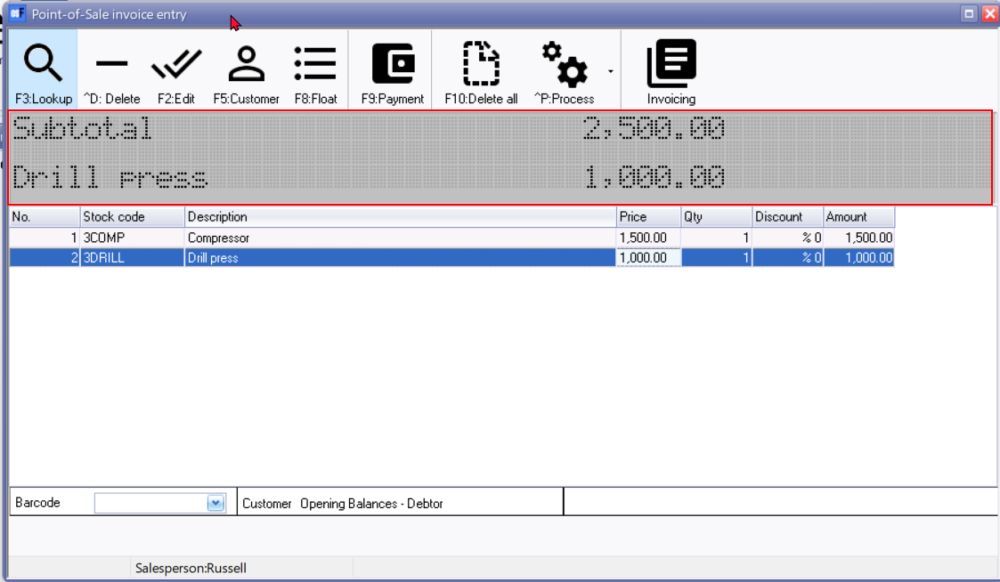
FIXED - Access violations - POS Input - POS on default ribbon (Ctrl + F6) Standard POS
Fixed in osFinancials5.1.0.127 - If no Sales account is selected, a message will be displayed:
Default customer account not setup! Please setup!
When click on OK it will launch the POS setup (Setup → Point-of-Sale).
Replicated In osF5.1.0.99 and osF5.1.0.100
Access violation at address 5F3580AA in module 'rtl280.bpl'. Write of address 00000240
Replicated In osF5.1.0.93
Access violation at address 08D6542C in module 'osfresource.bpl'. Read of address 000001F0
POS (Standard screen flickers New Invoice / Display area
Replicated in osFinancials5.1.0.127 since osFinancials5.1.0.109
Setup → Workflow
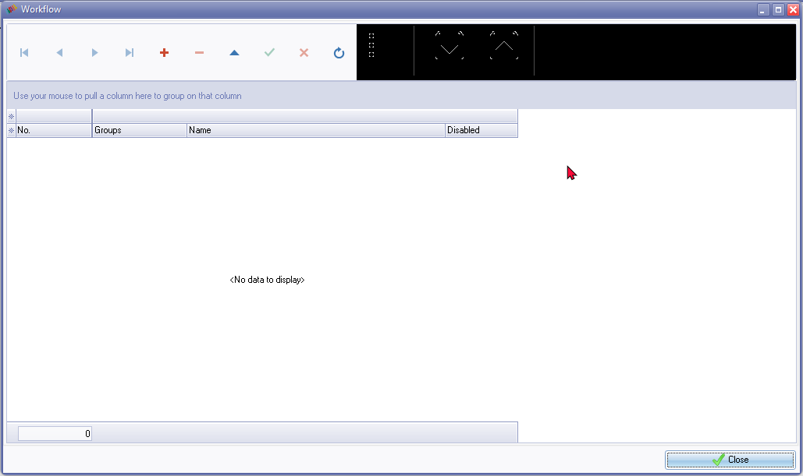
No Delete confirmation messages
Calendar - Delete process repeating invoices
No delete confirmation message
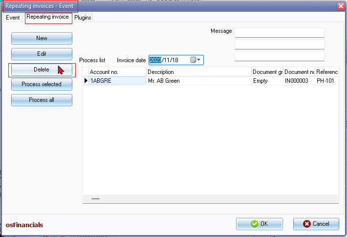
Click on Delete button and the item is removed from the "Process list".
NOTE
For events there is a confirmation message to delete the event
Delete "Repeating invoices" from your schedule?
This operation cannot be undone!
Debtors / Creditors tab - Delete contact - No confirmation message
Click Delete button and gone is the contact
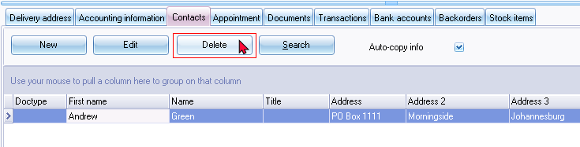
NOTE
On Contacts screen (Default ribbon) the Delete confirmation message is displayed:
Do you want to delete this contactperson?
On Calendar - Contacts screen the Delete confirmation message is displayed:
Delete Ben Best from your list of contacts?
This operation cannot be undone!
Change Reporting groups 1 / Reporting group 2
Change Reporting groups 1 / Reporting group 2 for Debtors / Creditors and Documents no confirmation message is displayed from the context menu options on the grid.
Using the context menu on Stock items Change Reporting groups 1 / Reporting group 2 a confirmation message is displayed e.g.:
Set reporting group 2
MSSQL Error - Plugin - Location-Serials-Batches
Came right probable when updated the object 'dbo.BatCon'
MSSQL Error Post Batch Purchase Document - Error
The statement has been terminated.
Violation of PRIMARY KEY constraint 'PK__BatCon__DB7D61DFCE4DB78F'. Cannot insert duplicate key in object 'dbo.BatCon'. The duplicate key value is (61).
Posted after second attempt
MSSQL Error - Import Stock
Setup ribbon Import - Stock - Tab delimited (*.txt) file
Error 3The statement has been terminated.
The INSERT statement conflicted with the FOREIGN KEY constraint "FK_DOCLINE_STOCK". The conflict occurred in database "MSSQL-HANDYMAN", table "dbo.Stock", column 'WStockID'.
Default " nounicode=true " - Setting in osf.ini file Errors in Firebird Database types
Replicated in osF5.1.0.127 since osFinancials5.1.0.16 displayed incorrectly, since unicode was introduced.
Currencies �
osf.ini - " nounicode=true " - Default setting is Not Commented or Set to False
Database types
- Firebird Replicated issues
- MSSQL - Works
The Currency symbols is not displayed correctly (displayed as a " I " character) on Setup → Currencies screen. In Reports → Currencies and printed Document layout files, it displays the currency symbol as " � ".
NOTE : To be able to use Currencies the Default setting " nounicode=true " needs to be changed to " nounicode=false " or commented (in Firebird databases).
This will cut-off the Reference number / Descriptions when printing some reports e.g. of Debtor Statements,, Creditor remittance advices, etc., if the Default setting osf.ini - " nounicode=true " is changed.
Setup Countries - Displays incorrect character " �land Islands "
See - Setup Countries - Displays incorrect character " �land Islands "
If the default setting " nounicode=true " is not uncommented in the osf.ini file, this replicate the error not displaying correctly.
Database types
- Firebird Replicated issues
- MSSQL - Works
If the default unicode setting in the osf.ini file is changed to " ;nounicode=true " is uncommented or set to false " nounicode=false " in the osf.ini file, these settings does not change the display of " �land Islands ".
�land Islands Displays incorrect character irrespective of unicode settings
Also replicated in the "Country field of Debtor / Creditor accounts s well as Delivery address tab.
Reports (Firebird)
Known issues - Firebird Reports - Nounicode settings - osf.ini-file
osf.ini - " nounicode=true " Default setting is Not Commented or Set to False the Reference number / Descriptions will display 100% when printing some reports e.g. of Debtor Statements,, Creditor remittance advices, etc.
Database types
- Firebird Replicated issues
- MSSQL - Works
On the other hand to use Currencies in osFinancials5.1.0.100, the Currency symbols is not displayed correctly (displayed as a " I " character) on Setup → Currencies screen, Reports → Currencies and Document layout files.
To be able to use Currencies the Default setting " nounicode=true " needs to be changed to " nounicode=false " or commented.
This will cut-off the Reference number / Descriptions when printing some reports e.g. of Debtor Statements,, Creditor remittance advices, etc., if the Default setting osf.ini - " nounicode=true " is changed.
Sets of Books in the Setup → Reporting dates - Cannot Update - Unicode - Error - Refresh failed. Found 0 records
Database types
- Firebird Replicated issues
- MSSQL - Works
Default unicode setting in osf.ini file =" nounicode=true "
Unicode - Error - Refresh failed. Found 0 records
Cannot set reporting dates in Setup → Reporting dates - produces errors when default setting in the osf.ini files is set to
nounicode=true
Before in earlier versions in 2022 this error was replicated since the nounicode setting was implemented in osFinancials5.1.0.49
===
Help topics
English
Added:
Updated:
Stock sidebar reports
Metatags for SEO
Afrikaans - More modern Afrikaans
Reports-GENERAL-documents Fixes
Fixed - batch.rep
Location : plug_ins\reports\GENERAL\documents\batch.rep
Multi page print - Print report name and batch name on each new page.
Fixed - postedbatch.rep
Location : plug_ins\reports\GENERAL\documents\postedbatch.rep
Fixed - Overlapping labels accounts
Fixed - No data available to print! setting
To do
MSSQL Database reports
Outstanding errors : - MSSQL Database support - Reports
Prints in FIREBIRD Databases
Errors in MSSQL Databases
Stock in / out
Location : ...\plug_ins\reports\systemreports\TRN_1999\TRN_906112 (Stock in / out)
TRN_906112.rep
Unknown identifier: :END.SUM 'END.SUM':Expression TRpExpression2
END - Dataset
Select sum(Fqty) from stocktrn
left join dochead on stocktrn.Wdocid = dochead.wdocid
where WStockid = :Nr and stocktrn.ddate <= :ddatetofl
Stock sidebar reports - Historical value
Location : ...\plug_ins\reports\REPORTS\STOCK\LANG_906031 (Historical value)
Unknown identifier: VERKOOP.SUM 'VERKOOP.SUM':Expression TRpExpression12
SQL =
(VOORRAAD.AantalAanw +
VERKOOP.SUM - INKOOP.SUM
) * VOORRAAD.LAATSEPRIJS
Debtors / Creditors - Outstanding at date
TRANSACTION_DETAIL:ACCLIST:Parameter 'DDATETOFL' not found
Debtors - Outstanding at date
Location : plug_ins\reports\userreports\TRN_160\TRN_947\TRN_906104 - Debtors outstanding at date
Creditors - Outstanding at date
Location : plug_ins\reports\userreports\TRN_161\TRN_947\TRN_906103 - Creditors outstanding at date
FIXED - MSSQL Database support - Reports
Fixed - To print on MSSQL and Firebird databases
Debtors
Debtor statements
Location : plug_ins\reports\systemreports\TRN_160\TRN_1090 \TRN_906552 - Debtor statement - Outstanding
Debtors - Age analysis (Userreports)
Location : plug_ins\reports\userreports\TRN_160\TRN_906143 - Balances detail history (open item)
Creditors
Creditor remittance advices
Location : plug_ins\reports\systemreports\TRN_161\TRN_1090 \TRN_906551 - Creditor remittance advises - Outstanding
Creditors - Age analysis (Userreports)
Location : plug_ins\reports\userreports\TRN_161\TRN_906143 - Balances detail history (open item)
Outstanding - Fixed - To print on MSSQL and Firebird databases - Period 2 includes Period 1
Location : plug_ins\reports\systemreports\TRN_160\TRN_1090\TRN_1090 - Debtor statement
Location : plug_ins\reports\systemreports\TRN_161\TRN_1090\TRN_1089 - Creditor remittance advises
Debtor age analysis
Location : plug_ins\userreports\userreports\TRN_160\TRN_906142 - Balances detail
Location : plug_ins\reports\userreports\TRN_160\TRN_906147 - Balances
Creditor age analysis
Location : plug_ins\userreports\userreports\TRN_161\TRN_906142 - Balances detail
Location : plug_ins\reports\userreports\TRN_161\TRN_906147 - Balances